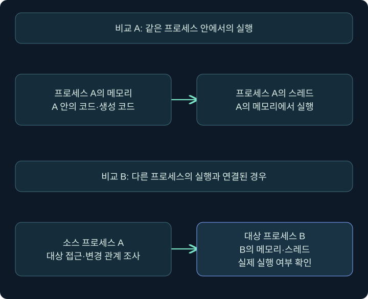
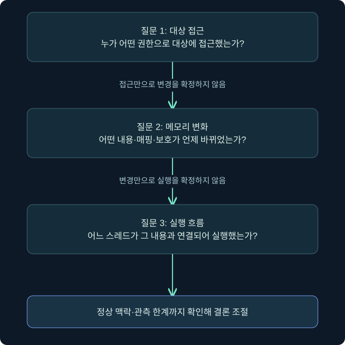
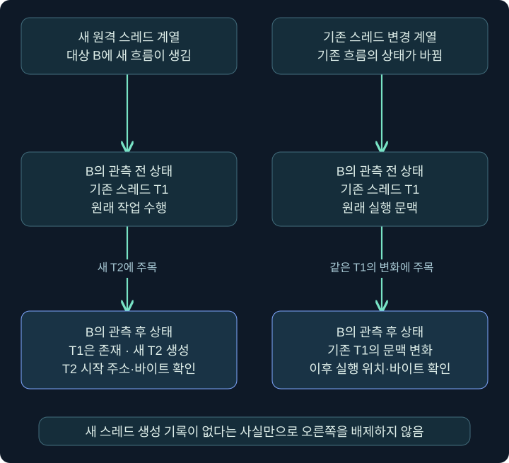
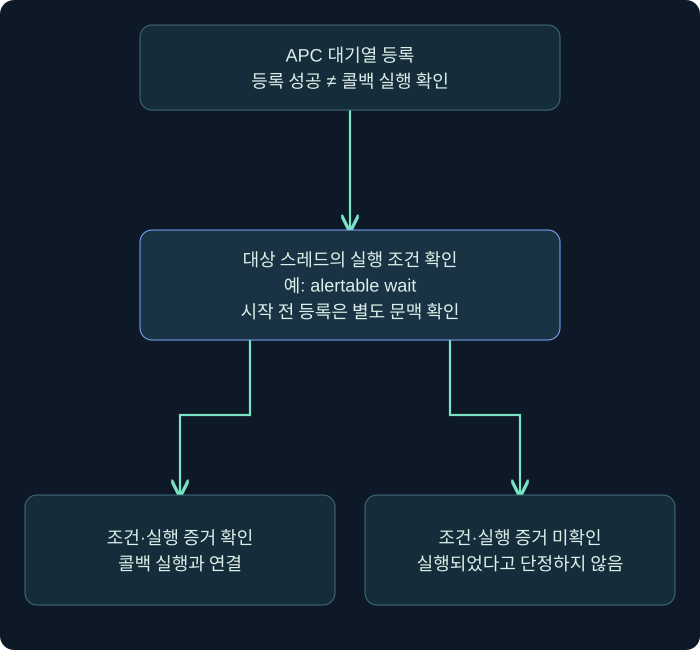
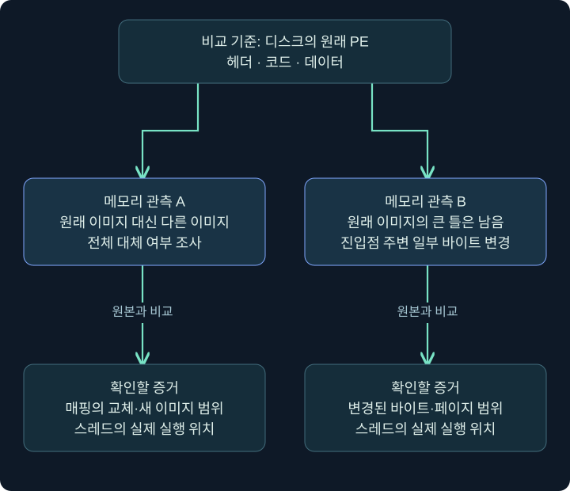

코드 주입을 어떻게 구분하고 어떤 증거로 확인할까요?
원격 스레드·스레드 흐름 변경·APC·할로잉을 구별하고, ATT&CK와 Sysmon 로그에서 확인한 사실과 아직 필요한 증거를 연결합니다.
1. 정상 프로그램 이름으로 실행되면 정상 행동일까요?
작업 관리자에 익숙한 프로그램 이름이 보인다고 그 안에서 실행되는 모든 코드의 출처가 같다고 보장할 수는 없습니다. 프로그램이 원래 포함하지 않았던 코드가 그 프로세스의 실행 문맥에서 동작하도록 만드는 여러 방법이 있기 때문입니다. 이 강의에서는 이를 설명하는 프로세스 주입(process injection) 개념과 증거 해석을 배웁니다.
다른 사무실의 명찰을 달고 일하는 사람을 떠올려 보세요. 사무실 간판은 그대로여도 실제 일을 수행한 사람과 업무 내용은 달라질 수 있습니다. 다만 모든 외부 방문이 침입은 아니듯, 디버거·보안 제품·접근성 도구 등 정상 소프트웨어도 다른 프로세스와 상호작용할 수 있습니다. 이름이나 API 하나가 아니라 출처·권한·메모리·실행 흐름을 연결해서 판단해야 합니다.
MITRE ATT&CK의 T1055는 다른 실행 중 프로세스의 주소 공간에서 코드를 실행하는 여러 기법을 묶어 설명합니다. 이 강의는 분류와 조사 기준을 다루며, 실제 타 프로세스에 코드를 주입하거나 탐지를 회피하는 실습을 수행하지 않습니다. 아래 로그와 주소는 모두 독립적으로 만든 가상 사례입니다.
2. 같은 프로세스 실행과 다른 프로세스 주입을 구별합니다
어떤 프로그램이 자기 메모리에 바이트를 준비한 뒤 실행하는 예제를 보았다고 해 보겠습니다. 실행 가능한 메모리와 스레드 개념을 익히는 데 도움이 될 수는 있습니다. 그러나 그 사실만으로 “다른 프로세스에 주입했다”라고 기록할 수는 없습니다. 자기 주소 공간에서의 동작과 프로세스 경계를 넘는 동작을 구분해야 합니다.
| 상황 | 구별할 핵심 | 추가로 확인할 것 |
|---|---|---|
| 자기 프로세스 메모리에서 실행 | 프로세스 경계를 넘었는지 | JIT 등 정상 기능인지, 코드의 출처 |
| 다른 프로세스에 메모리 쓰기 | 실제 데이터가 옮겨졌는지 | 대상·범위·권한·반환 결과 |
| 다른 프로세스에서 실행 흐름 변경 | 새 코드가 실제 실행됐는지 | 스레드·명령 포인터·시간 연결 |
| DLL을 로드한 프로세스 | 파일 기반 모듈이 적재되었는지 | 정상 플러그인인지 비정상 적재인지 |
그림으로 확인: 어느 프로세스의 메모리에서 실행되었나요?

위쪽은 메모리와 실행 스레드가 모두 A에 속합니다. JIT 같은 정상 기능도 이런 관계를 만들 수 있습니다. 아래쪽에서는 A와 B가 별개의 프로세스이므로 경계를 넘은 접근·변경·실행이 실제로 있었는지가 추가 질문이 됩니다. 아래 화살표는 조사할 관계를 표시한 것이며 특정 API 호출 순서나 성공한 공격을 뜻하지 않습니다. B의 이름이 정상이라는 사실도 그 안의 모든 바이트가 정상 출처라는 보장은 아닙니다.
분석할 때는 최소 세 질문을 나눕니다. 접근할 수 있었는가, 바이트나 매핑이 바뀌었는가, 실행이 이어졌는가입니다. 이 세 질문에 대응하는 증거가 항상 한 로그에 들어 있지는 않습니다. 또한 모든 변형이 같은 API 순서로 구현되는 것은 아닙니다.

이 그림은 조사 질문의 관계입니다. 실제 공격 절차나 필수 API 순서가 아닙니다. 예를 들어 공유 구역 매핑처럼 메모리 변화의 경로가 다른 경우도 있습니다. 그림의 칸을 모두 채웠다고 자동으로 악성이 되는 것도 아닙니다. 승인된 디버깅처럼 정상 맥락이 있는지 검토해야 합니다.
3. 새 원격 스레드와 기존 스레드 변경은 다릅니다
고전적인 원격 스레드 방식에서는 다른 프로세스에 실행할 내용을 준비하고 새 스레드의 실행과 연결하는 형태를 살펴봅니다. 조사자는 소스 프로세스와 대상 프로세스, 메모리 영역, 스레드 시작 주소를 연결합니다. CreateRemoteThread 같은 이름은 이 계열을 이해하는 단서이지만, 같은 API가 보였다는 이유만으로 목적을 확정하지는 않습니다.
반면 스레드 실행 흐름 가로채기(thread execution hijacking)는 이미 존재하는 스레드의 실행 상태를 바꾸는 관점입니다. 새 원격 스레드가 생성되지 않을 수 있으므로, “원격 스레드 생성 이벤트가 없다”는 사실로 배제하면 안 됩니다. 스레드 문맥의 변화와 메모리 내용, 중단·재개 흔적 등을 함께 봅니다.
| 관점 | 새 원격 스레드 계열 | 기존 스레드 흐름 변경 계열 |
|---|---|---|
| 실행 흐름의 단위 | 새 스레드에 주목 | 기존 스레드 상태에 주목 |
| 관심 증거 | 스레드 생성 주체와 시작 주소 | 문맥 변경과 이후 실행 위치 |
| 단일 로그의 한계 | 이벤트만으로 바이트 내용을 모릅니다 | 새 스레드 이벤트가 없어도 가능성을 배제하지 못합니다 |
| 정상 맥락 확인 | 디버깅·보안 도구 등 | 디버깅·계측 등 |
명령 포인터가 파일 기반 모듈 밖에 있다는 점은 조사 우선순위를 높일 수 있습니다. 하지만 JIT 코드 같은 정상 원인도 있습니다. 메모리 종류, 페이지 보호, 바이트 내용, 호출 경로와 제품 기능을 연결해서 설명해야 합니다. “모듈 밖 주소 = 악성”처럼 식으로 외우지 마세요.
그림으로 확인: 새 T2를 찾을까요, 기존 T1의 변화를 찾을까요?

각 열은 서로 다른 가상 사례이고 위아래는 관측 전후입니다. 왼쪽은 추가된 스레드의 출처와 시작 주소가 중요합니다. 오른쪽은 기존 스레드의 문맥이 어떻게 바뀌었는지를 확인해야 합니다. 그래서 새 원격 스레드를 기록하는 이벤트만 찾으면 오른쪽 사례를 놓칠 수 있습니다. 단, 실행 중인 스레드는 정상적으로도 여러 함수를 오가므로 현재 명령 포인터가 달라졌다는 사실 하나로 변조를 입증하지는 않습니다. T1·T2는 설명용 이름입니다.
4. APC는 대기열에 넣는 것과 실행하는 것이 다릅니다
APC(Asynchronous Procedure Call)는 특정 스레드 문맥에서 실행할 함수를 대기열에 넣는 메커니즘입니다. 이 강의에서는 일반적인 사용자 모드 APC를 설명합니다. 대기열에 넣었다는 사건과 콜백이 실제로 실행되었다는 사건은 분리해야 합니다.
일반적인 사용자 모드 APC는 대상 스레드가 alertable wait, 즉 APC를 처리할 수 있는 형태의 대기 상태에 들어오는 조건과 연결됩니다. 단순히 “잠깐 기다렸다”는 한국어 설명만 보고 조건이 충족되었다고 생각하면 안 됩니다. 대기에 사용한 API와 인자가 중요합니다.
| 대기 호출의 예 | 일반 사용자 모드 APC의 alertable 조건 |
|---|---|
| Sleep | 단순 호출만으로 alertable wait가 되지 않습니다 |
| WaitForSingleObject | 단순 호출만으로 alertable wait가 되지 않습니다 |
| SleepEx | bAlertable이 TRUE인 호출을 구분해야 합니다 |
| WaitForSingleObjectEx | bAlertable이 TRUE인 호출을 구분해야 합니다 |
이 표는 함수 이름을 외우라는 뜻보다 실행 조건을 확인하라는 뜻입니다. 대기열 등록 성공, 대상 스레드의 대기 상태, 콜백 실행 확인이 서로 다른 증거라는 점을 기억하세요. APC 종류와 세부 환경이 다르면 조건도 달라질 수 있으므로 일반 사용자 모드 APC 설명을 모든 메커니즘에 그대로 확대하지 않습니다.

Early Bird라는 표현은 스레드가 정상 실행을 본격적으로 시작하기 전 초기 시점에 APC를 이용하는 변형을 설명할 때 사용됩니다. Microsoft의 QueueUserAPC 문서는 스레드가 실행을 시작하기 전에 대기열에 넣은 경우의 동작도 설명합니다. 이를 일반적인 실행 중 스레드의 대기 조건과 섞어서 “항상 아무 스레드에서나 즉시 실행된다”라고 말하지 않습니다. 구체적인 스레드 상태와 실행 시점을 확인해야 합니다.
5. 프로세스 할로잉과 진입점 덮어쓰기를 구별합니다
프로세스 할로잉(process hollowing)은 정상 이미지로 시작한 프로세스의 실행 이미지 내용을 다른 내용으로 바꾸어 실행하는 계열을 설명합니다. 흔히 일시 중단된 새 프로세스의 초기 상태가 관련되지만, 분석에서는 이름보다 실제로 무엇을 바꾸었는지가 중요합니다.
정상 이미지 전체를 대체하는 것과 특정 진입점 주변 바이트만 덮어쓰는 것은 범위와 증거가 다릅니다. 둘 다 설명 없이 뭉뚱그려 “전체 이미지를 교체했다”고 기록하면 안 됩니다. 원래 이미지의 매핑 상태, 메모리와 디스크의 차이, 변경된 범위, 스레드 실행 위치를 확인합니다.
이런 설명에서 PEB(Process Environment Block)라는 프로세스 관련 구조가 등장하기도 합니다. 인터넷 예제의 “PEB 주소에 고정 숫자를 더하면 이미지 기준 주소가 나온다”는 계산을 모든 환경에 복사하지 마세요. 32비트·64비트, 64비트 Windows에서 32비트 프로그램을 지원하는 WOW64, 운영체제와 구조 정의의 차이가 있습니다. 검증한 심벌·구조·도구 문맥을 기록하지 않은 오프셋은 추측에 가깝습니다.
앞 강의에서 배운 PE의 진입점 RVA와 실제 적재 기준 주소가 여기서 연결됩니다. 다만 파일 헤더의 값이 있다는 사실과 조사 시점 메모리에서 실제 어느 바이트가 실행되었는지는 별도입니다. 변경이 의심되면 파일 원본과 메모리 관측의 시간·출처를 함께 남깁니다.
그림으로 확인: 전체 교체와 일부 변경은 같은 범위가 아닙니다

윗상자는 비교 기준인 원본 파일입니다. 왼쪽은 이미지의 매핑과 대체 범위를, 오른쪽은 남아 있는 이미지 안에서 바뀐 구체적 범위를 묻습니다. 두 경우 모두 이후 스레드가 어느 바이트를 실행했는지는 따로 확인합니다. 이 그림은 변경 범위의 차이를 설명하며 실행 절차를 나타내지 않습니다. 정상 로더의 재배치나 실행 중 데이터 변경도 파일과 메모리 차이를 만들 수 있으므로 차이가 있다는 사실 자체를 악성 판정으로 바꾸지 않습니다.
6. ATT&CK 분류를 조사 질문에 연결합니다
분류표는 보고서의 공통 언어를 만드는 데 유용합니다. 하지만 기법 ID를 붙였다는 사실이 행위를 입증하는 증거는 아닙니다. 먼저 관측을 설명하고, 그 관측이 어느 분류와 맞는지 연결합니다.
| 분류 | 설명의 초점 | 증거에서 물을 질문 |
|---|---|---|
| T1055 | 프로세스 주입 상위 기법 | 다른 프로세스 문맥에서 코드가 실행되었나요? |
| T1055.003 | Thread Execution Hijacking | 기존 스레드 실행 상태가 어떻게 바뀌었나요? |
| T1055.004 | Asynchronous Procedure Call | 어느 스레드에 무엇이 대기열 등록되고 실행되었나요? |
| T1055.012 | Process Hollowing | 원래 이미지와 메모리 이미지가 어떻게 달라졌나요? |
2026년 11월 2일 확인한 T1055 페이지는 버전 2.0이며 전술에 Stealth와 Privilege Escalation을 표시합니다. ATT&CK 용어와 분류는 바뀔 수 있으므로 보고서에는 확인일을 적습니다. 프로세스 주입이 언제나 권한 상승을 만든다는 뜻은 아닙니다. 대상 문맥과 실제 권한 변화가 있어야 그 주장을 할 수 있습니다.
7. Sysmon 로그로 어디까지 볼 수 있을까요?
Sysmon은 Windows 시스템 활동을 기록하는 도구입니다. 구성과 환경에 따라 수집되는 이벤트가 달라집니다. “설치되어 있다”와 “필요한 기록이 남았다”는 같은 말이 아닙니다. 이벤트가 없을 때에는 기법 부재보다 수집 조건을 먼저 확인해야 할 수 있습니다.
| 이벤트 | 이 강의에서 관심을 둘 정보 | 해석의 한계 |
|---|---|---|
| 1 Process Create | 프로세스 생성·명령줄·사용자·관계 | 실행된 모든 내부 코드를 보여 주지 않습니다 |
| 7 Image Load | 적재된 모듈 | 설정을 확인해야 하며 모든 비파일 메모리를 설명하지 않습니다 |
| 8 CreateRemoteThread | 다른 프로세스에 생성한 스레드의 관계 | 모든 주입 변형을 포괄하지 않습니다 |
| 10 ProcessAccess | 소스·대상 접근과 권한 정보 | 접근이 이후 어떤 행위로 이어졌는지 별도 확인합니다 |
| 25 ProcessTampering | 일부 이미지 변조 관련 징후 | 모든 변조에 대한 완전한 검출을 보장하지 않습니다 |
가능하면 ProcessGuid로 같은 호스트의 관련 프로세스 인스턴스를 연결하고 시각·사용자·경로도 함께 확인합니다. PID 재사용과 로그 수집 지연을 고려하세요. 서로 다른 로그 원천의 시계가 어긋나 있으면 아주 짧은 간격의 순서를 과도하게 확정하지 않습니다.
단말의 위협 탐지와 대응을 담당하는 EDR(Endpoint Detection and Response)의 판정과 Sysmon의 기록도 구별합니다. 이벤트가 남았다고 차단되었다는 뜻이 아니며, 차단 알림 하나로 전체 공격 흐름이 중단되었다고 단정할 수도 없습니다. 기록 생성, 경보 발생, 대응 실행, 효과 검증은 각각 확인해야 합니다.
8. 가상 타임라인에서 결론을 조절합니다
다음은 설명을 위해 만든 가상 로그입니다. 실제 Sysmon XML이나 실측 타임라인이 아닙니다. 이벤트 필드는 핵심 관계만 남겼습니다.
11:20:00 Event 1 프로세스 A 생성 / ProcessGuid {A}
11:20:04 Event 10 Source {A} → Target {B} / 접근 정보 기록
11:20:05 Event 8 Source {A} → Target {B} / 시작 주소 0x000001A000001000
11:20:08 별도 관측 대상 B의 해당 주소가 private executable 영역으로 보임이 자료는 A와 B 사이의 접근 및 스레드 생성 관계를 조사할 이유가 됩니다. 그러나 “그 주소의 바이트가 무엇인지”, “수집 시점에도 같은 매핑인지”, “승인된 도구인지”는 아직 모릅니다. Event 8과 뒤의 메모리 관측 사이에 상태가 바뀌었을 수도 있습니다.
| 기록 종류 | 이 예제에서 쓸 수 있는 문장 |
|---|---|
| 관측했다고 가정한 사실 | A에서 B로의 접근과 원격 스레드 생성 기록이 있다 |
| 지지되는 가설 | B의 비파일 실행 영역과 연결될 가능성을 조사한다 |
| 추가 증거 | 해당 시각 메모리 내용·매핑·스레드 상태·도구 정당성 |
| 아직 과한 결론 | A가 특정 악성코드를 실행했고 자료 유출까지 완료했다 |
정상 보안 제품이 원인이라는 설명이 나온 경우에도 제품 이름만으로 닫지 않습니다. 서명과 설치 출처, 버전, 정상적인 동작 범위, 같은 제품을 쓰는 다른 단말의 기준선이 설명을 지지하는지 확인합니다. 반대로 서명된 프로세스라는 사실만으로 내부의 모든 실행 바이트가 신뢰된다고 보지도 않습니다.
9. 보고서에 남길 최소 연결고리
재현 가능한 보고서는 “주입 의심”이라는 한 줄보다 길지만, 불필요하게 모든 로그를 붙이는 문서도 아닙니다. 독자가 주장과 증거를 따라갈 수 있도록 핵심 식별자·시각·출처·한계를 연결합니다.
- 호스트와 프로세스 인스턴스를 식별합니다. PID 외의 식별자와 생성 시각을 포함합니다.
- 접근·메모리·실행 중 무엇을 직접 관측했는지 나눕니다.
- 관측 시각과 수집 시각, 도구·구성·버전을 기록합니다.
- 정상 동작이라는 설명과 악성 가설을 각각 지지하거나 반박하는 근거를 확인합니다.
- 확인한 범위에 맞게 ATT&CK 분류와 결론의 강도를 정합니다.
이 강의에서는 실제 메모리 덤프나 캡처를 제공하지 않습니다. 따라서 위 가상 사례의 주입 여부를 “검증 완료”라고 보고하지 않습니다. 탐지 논리를 설계하는 연습과 실제 사건에서 증거를 획득해 입증하는 작업을 구별해야 합니다.
10. 복습과 바로 읽는 해설
복습 1. 자기 프로세스 메모리에서 실행하면 다른 프로세스 주입을 입증하나요?
해설: 아닙니다. 프로세스 경계를 넘었는지부터 확인합니다. 자체 메모리 실행은 JIT 같은 정상 기능일 수 있으며 T1055 주장을 위해서는 다른 프로세스 문맥의 실행 관계가 필요합니다.
복습 2. 프로세스 접근 로그만으로 실행까지 확정할 수 있나요?
해설: 없습니다. 접근 권한과 결과, 실제 메모리 변화, 실행 흐름을 따로 확인합니다. 핸들을 얻었다는 사실과 그 권한을 실제로 사용했다는 사실도 다릅니다.
복습 3. Event 8이 없으면 모든 코드 주입을 배제할 수 있나요?
해설: 없습니다. 기존 스레드 변경이나 APC 등은 같은 방식의 새 원격 스레드를 만들지 않을 수 있고 수집 구성에도 영향을 받습니다. 특정 이벤트의 부재와 기법 전체의 부재를 구분합니다.
복습 4. QueueUserAPC 성공은 콜백 실행 성공과 같은가요?
해설: 다릅니다. 대기열 등록과 실제 실행은 별도 사건입니다. 일반 사용자 모드 APC에서는 대상 스레드 상태와 alertable wait 같은 조건을 확인해야 합니다.
복습 5. Sleep이나 WaitForSingleObject는 그 자체로 alertable wait인가요?
해설: 아닙니다. SleepEx나 WaitForSingleObjectEx의 alertable 인자를 구별해야 합니다. “대기한다”는 설명만으로 APC 실행 조건을 충족했다고 추정하지 않습니다.
복습 6. 진입점 일부 덮어쓰기는 언제나 이미지 전체 교체인가요?
해설: 아닙니다. 바뀐 범위와 매핑 상태를 확인하고 실제 행위를 설명해야 합니다. 기법 이름을 붙이기 위해 관측하지 않은 전체 교체를 덧붙이면 안 됩니다.
복습 7. private 실행 메모리라는 사실만으로 악성인가요?
해설: 아닙니다. JIT 같은 정상 원인이 가능합니다. 메모리 내용, 생성·변경 주체, 실행 흐름, 제품 기능과 출처를 함께 검토합니다.
복습 8. ATT&CK의 권한 상승 전술 표시는 모든 주입이 권한 상승이라는 뜻인가요?
해설: 아닙니다. 실제 대상 보안 문맥과 권한 변화가 있어야 합니다. 분류는 가능한 목적을 정리하는 언어이며 개별 사건의 결과를 대신 증명하지 않습니다.
11. 공식 근거와 다음 학습
공식 자료 확인일은 2026년 11월 2일입니다. 개념도 보강에 사용한 관련 Microsoft 문서는 2026년 11월 3일에 추가 대조했습니다. APC 설명은 일반 사용자 모드 APC를 중심으로 하며 다른 종류의 APC나 모든 OS 내부 구현을 포괄하지 않습니다.
- MITRE ATT&CK T1055: 상위 기법과 하위 기법, 확인 시점의 분류.
- QueueUserAPC: 대기열 등록과 사용자 모드 APC 실행 조건.
- SleepEx: alertable 대기 인자와 반환 동작.
- Microsoft Sysinternals Sysmon: 이벤트 설명과 수집 구성.
- 프로세스 보안과 접근 권한: 요청 권한과 보호 대상의 제약.
다음 강의에서는 C# 코드가 Windows API를 부르는 경계인 P/Invoke를 배웁니다. 함수 이름뿐 아니라 자료형·인코딩·반환 규칙이 맞아야 호출을 올바르게 해석할 수 있습니다.